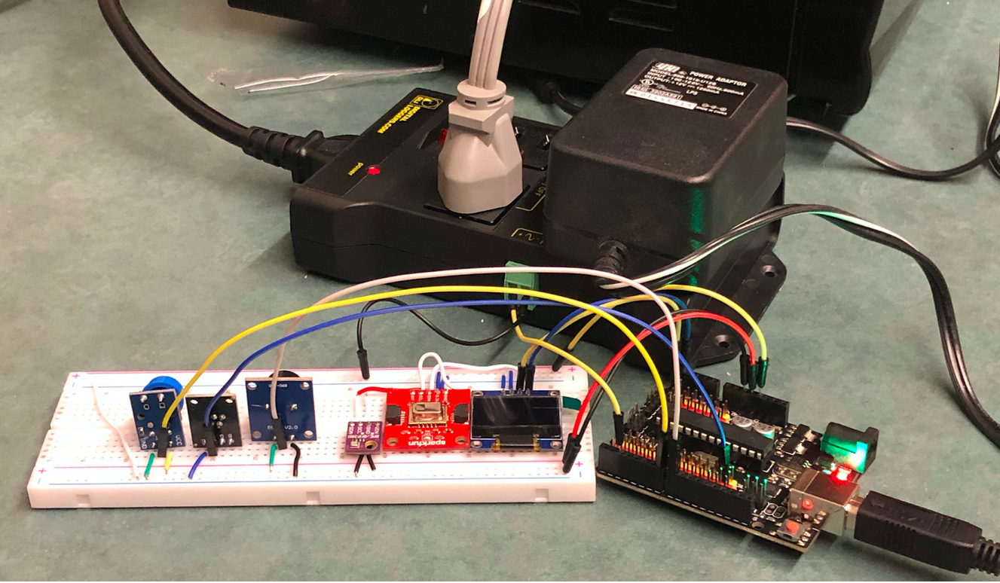
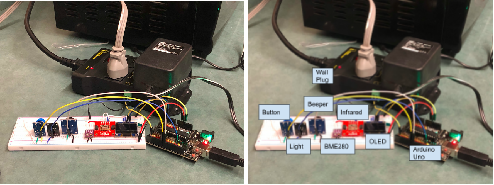
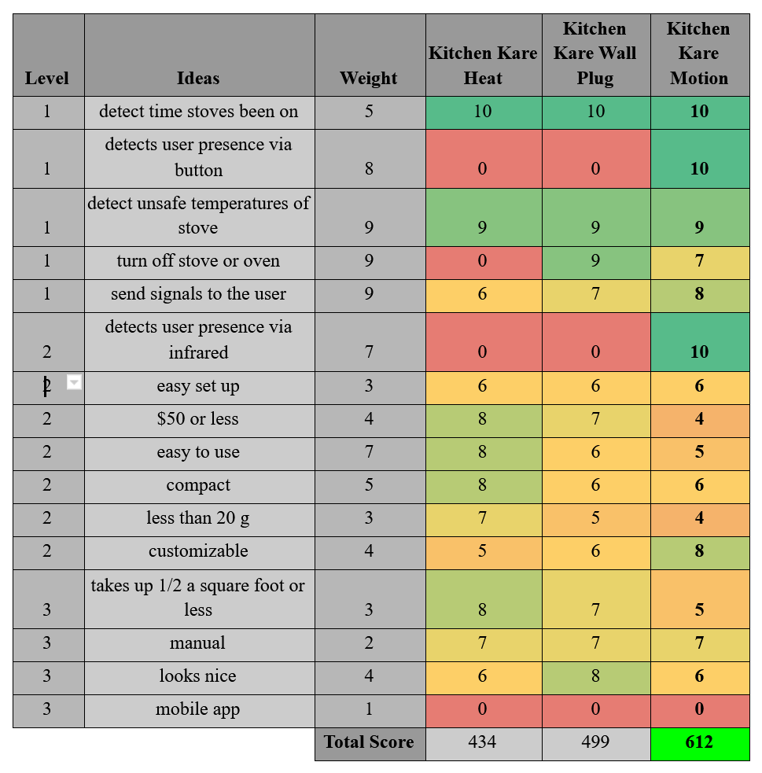

Kitchen Kare
STEM II is a group engineering project that Mass Academy students complete during D term of junior year. My group, STEMgineers, consisted of myself, Ronit, Kate, and Rachel.
Purpose
Elderly or disabled people often have trouble using kitchen appliances safely due to not being able to see, hear, or remember well. More specifically, clients have issues with stove and oven safety. In fact, this causes fire-related injuries and harms which is the third leading cause of death for the elderly (Agesafe, 2017). For example, they may not be aware of water that is boiling or that they left the stove or oven on. The dangers that the elderly and disabled face in the kitchen prevent them from independence and put their safety at risk. The goal of this project is to create a device targeted towards the elderly and disabled, specifically those with vision, hearing, or memory loss, to alert them of a stove or oven left working.
Market Research
There are a variety of tools and products on the market which meet several of the goals of this project. One such device is the Wallflower Smart Plug which is a device that is meant to go between the wall plug and the stove plug. The device monitors the user’s cooking habits and notifies them when the stove has been left on for a prolonged period of time. The device produces audible alerts and sends mobile notifications. The device also syncs with Amazon Alexa so that the user can verbally get information about the stove. A downside to the device is that the cost is high ($150). The device also cannot turn off the stove itself (the user has to turn it off manually). The only way to stop the alert noise produced by the device is by turning the stove off, even if the user intends to use the stove for long periods of time (Jablokov & Pinchuk, 2018).
A second device is the BurnerAlert stove reminder disc which alerts the user that the stove is still on with both audio (beeping noise) and visual (blinking light) cues. The user inserts the device in between the stove and the dial. Then, it will alert the user at timed intervals until the burner is turned off. One limitation is that this device will not automatically shut the stove off after a certain amount of time. Therefore, if the user has left the building or is far enough away to not see or hear the cues, this could still end up being a safety hazard (Porraro, 2014).
Another device is the iGuard Stove which has many different features. It can shut off the stove automatically after five minutes of no one being in the kitchen. The device also has manual timers to use when cooking food for longer periods of time, and there are locks that can be enabled to prevent the stove from being used at certain times. Additionally, the device can be remotely monitored and sends text alerts. In order to get these many features, the device is rather expensive, costing about $600. Despite the many capabilities of the device, there are several limitations. If a user does not know how to use a smartphone or does not own a smartphone, they will be unable to remotely use the device, and they will not receive text alerts. Additionally, the device does not work for the oven which leaves the oven unmonitored. The device might also make cooking more difficult because if you are cooking something and then leave the kitchen for a while, the stove will automatically shut off. It may also be difficult for people to install the iGuardStove (USPTO, n.d.).
Preliminary Designs
Kitchen Kare Motion
Kitchen Kare Motion is a solution to provide kitchen safety with a wall plug that regulates the power going to the stove/oven as well as a motion sensor that detects if the user is around the stove/oven while it is working. Both devices communicate with the bracelet that allows the user to turn the stove/oven on or off. The bracelet alerts the user if the stove/oven has been on for 30 minutes and the motion sensor has detected no motion for 30 minutes.
Kitchen Kare Heat
Kitchen Kare Heat is a solution to provide kitchen safety with a wall plug that regulates the power going to the stove/oven as well as a heat sensor that detects if the stove/oven reaches an unsafe temperature while it is on. Both devices communicate with the bracelet that allows the user to turn the stove/oven on or off. The bracelet alerts the user if the stove/oven has been on for 30 minutes or the heat sensor has detected a dangerous heat level.
Final Device
Research was conducted to decide the best and cheapest materials to create the device. It was decided that a BME280 sensor would be the optimal sensor to detect the temperature of the oven due to its tolerance of temperatures up to 500 degrees Fahrenheit, more than the ~180 F maximum our project requires. Additionally, the second sensor that was chosen was the SparkFun Infrared Sensor which detects the heat of people via a 8x8 bit resolution infrared camera and can be used to determine if there is someone in the kitchen. The devices to alert the user that they have left the stove or oven on were the OLED screen, Arduino Lights and the Arduino Small Speaker, which come with the standard Arduino Uno starter kit. Then, the Adafruit Plug was chosen as the arduino plug that the user will be able to access to remotely shut off the oven because of its easy in-built wiring in addition to its reliability and programmability as a surge protector. All of the arduino pieces were chosen to be connected via an Arduino Uno.
Once the materials were gathered, the development of the device began. First, tutorials on wiring for the arduino were researched. The wiring for the BME280 sensor was first set up, and the code was added. Then, to test the device, it was used to measure the temperature surrounding an oven as it heated up to different temperatures (Preliminary Testing). Once the BME280 sensor began to work, wiring and code was created for the infrared sensor. Additionally, the same process was conducted to get the alerts, light, beeper, and screen, to work. Code for a button to disable the beeping was also created. Once the wiring and code was complete for each individual section of the arduino, the pieces were combined using a breadboard. Throughout the process, many sensors such as the OLED and the BME280 had to be reconfigured from their separate codes into a consolidated code in order for successful results. Then, tutorials were researched for the wall plug and it was added to the breadboard. View our Github repository to access our code.
The final device is a breadboard that contains the sensors, alerts, button, screen, and wall plug. Every piece is connected to one sensor and works together to alert a user that the stove or oven is left on. Above is an image of the final product. The sensors and alerts are split up on either side of the breadboard to make it simpler to separate the devices in a future extension. The current iteration serves as a proof of concept for the eventual bracelet and to demonstrate that the system is capable of sensing, interpreting, and acting on information to protect the user from potentially dangerous kitchen appliances.
Testing
Results
A score of 6 or more counts as passing a requirement. Kitchen Kare Heat, which is an emphasis on the combination of the light/buzzer and temperature sensor (BME280), passes 12 requirements. Kitchen Kare Wall Plug, which is an emphasis on the combination of Kitchen Kare Heat and the Wall Plug component, passes 12 requirements. Kitchen Kare Motion, which is an emphasis on the combination of Kitchen Kare Wall Plug and the Infrared Sensor (Human Sensor) component, passes 12 requirements.
Overall, the Kitchen Kare Motion was able to successfully pass all three designs, while Kitchen Kare Wall Plug and Heat passed two and one respectively. While all models were able to fulfill the basic, established requirements of sensing heat and communicating danger via the light/buzzer, Kitchen Kare Motion went above and beyond. Kitchen Karen Wall Plug was able to outperform many models on the market by taking action; however, it was unable to detect the presence of a human. Meanwhile, Kitchen Kare Motion took into consideration the human situation around it via a button and infrared sensor and was able to turn off the oven. Since Kitchen Kare Motion was able to detect the presence of a human in addition to sensing unsafe temperatures and shutting the oven off while alerting the user, it is the best of the models and is the model that is best for the market.
Limitations
Kitchen Kare Motion can only detect humans up to 2 meters away, so if someone was standing further than that distance, they would not be detected. Additionally, if the user is moving very quickly, they will not be detected by the infrared sensor. Another limitation is that the plug used in testing does not handle enough voltage for it to work with the oven. As a result, a stronger wall plug needs to be purchased and tested with the oven to ensure that all of the tests have the same results as they did with the weaker wall plug.
Future Work
A wearable component will be built so that the user can move around and still receive alerts informing them if they have left the stove or oven on. In the future, the wearable component will also be able to be worn out of the house so that the user does not have to worry about leaving their kitchen appliances on. The wearable component will be made to be adjustable and customizable. Additionally, an app will be created so that the user does not have to bring around the wearable component. The app will have many of the same customizations as the wearable component: the user can edit the time that the alert will be set, turn the oven off, and snooze alerts. The device will also be made to look better so that the user will want to use it in their house. Additionally, the device will be able to connect to wifi so that it can be made wireless which will allow the wall plug and alerts to be separate from the sensors.
STEM II Fair Presentation
References
Agesafe. (2017, January 26). Home Safety for Seniors—Statistics and Solutions. Age Safe America. https://agesafeamerica.com/home-safety-seniors-statistics-solutions/
Jablokov, V. R., & Pinchuk, T. (2018). System and method of monitoring and controlling appliances and powered devices using radio-enabled proximity sensing (United States Patent No. US9928672B2). https://patents.google.com/patent/US9928672B2/en?q=wallflower+smart+plug&oq=wallflower+smart+plug
Porraro, M. L. (2014). Accessory for indicating status of stove burner (United States Patent No. US20140208958A1) https://patents.google.com/patent/US20140208958/en
USPTO. (n.d.). IGUARDSTOVE - iGuard Home Solutions Inc. Trademark Registration. USPTO.Report. Retrieved March 29, 2021, from https://uspto.report/TM/90217629